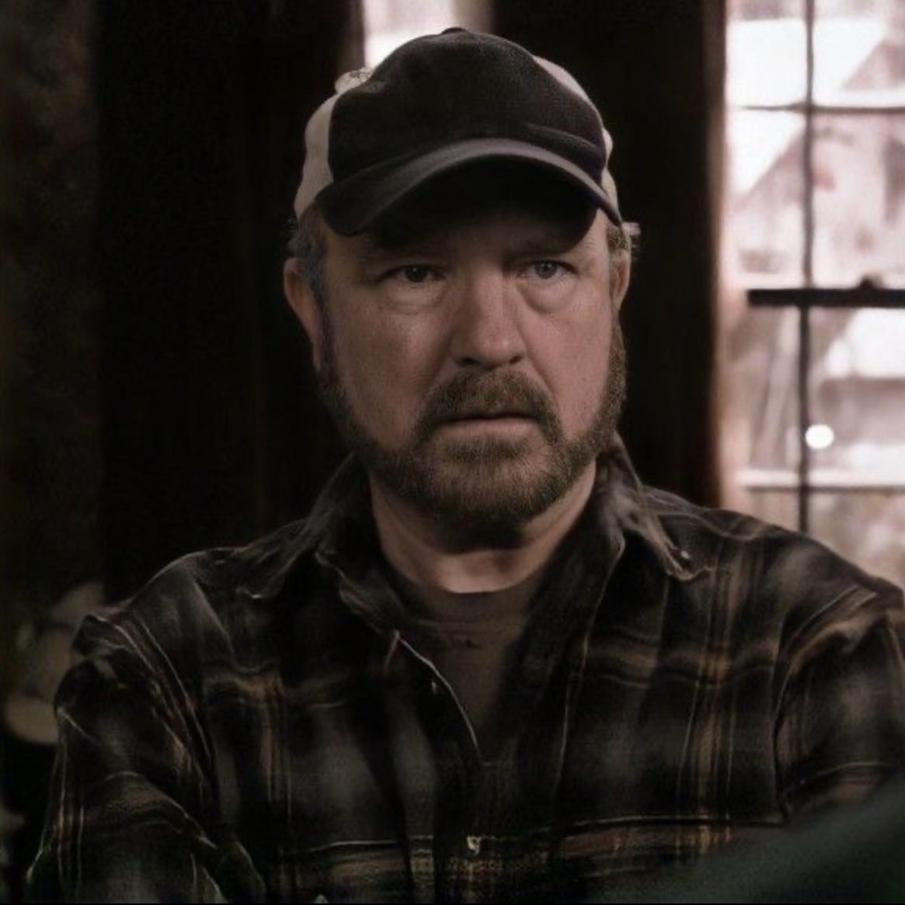
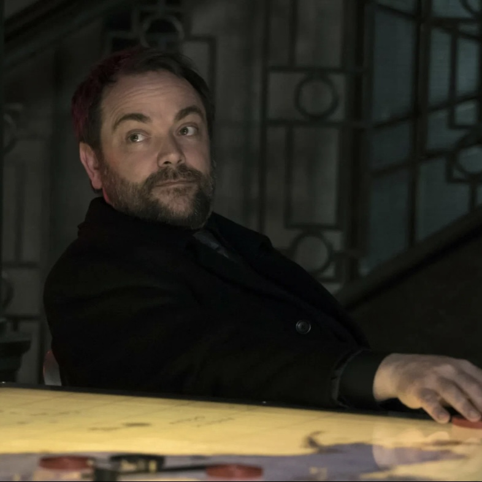
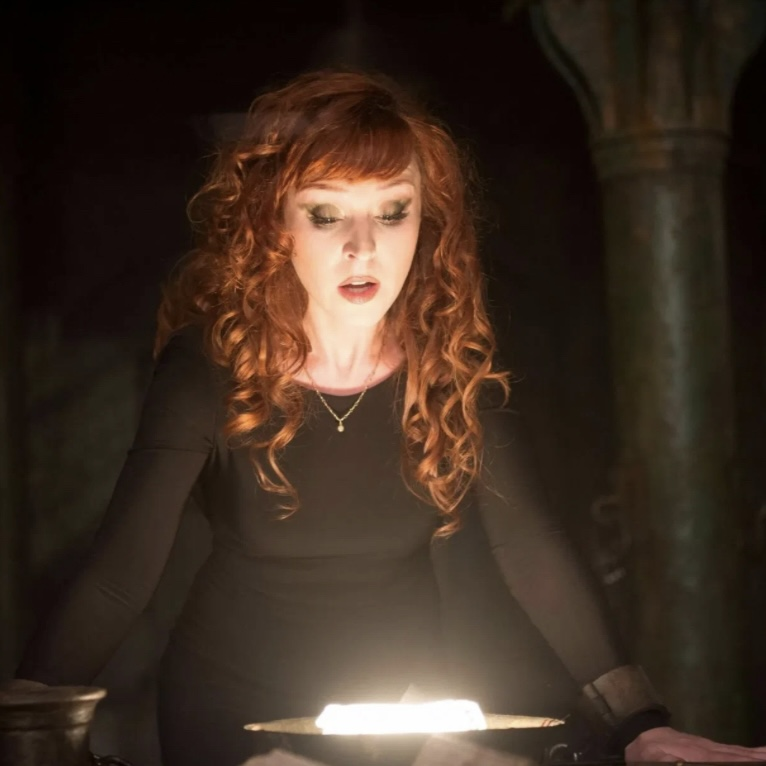
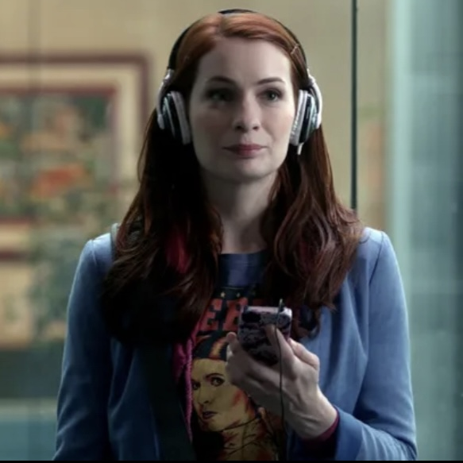
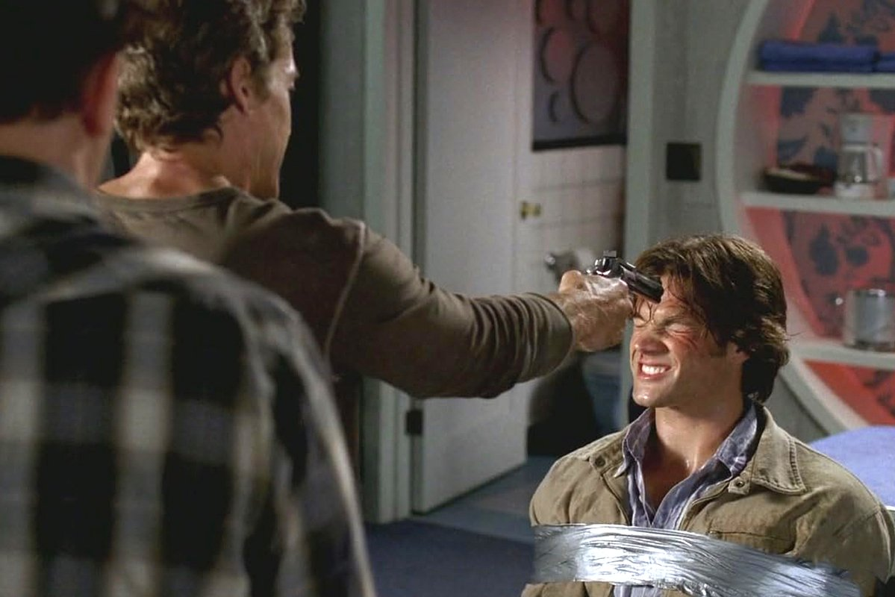

описание сериала
Сериал рассказывает о приключениях братьев Сэма и Дина Винчестеров, которые путешествуют по Соединённым Штатам на чёрном автомобиле Chevrolet Impala 1967 года, расследуют паранормальные явления, многие из которых основаны на американских городских легендах и фольклоре, и сражаются с порождениями зла, такими как демоны и призраки и другие. Принцип борьбы со сверхъестественным злом применялся и в таких телесериалах, как «Полтергейст», «Секретные материалы», «Зачарованные» и «Баффи — истребительница вампиров».
Премьера сериала состоялась 13 сентября 2005 года на канале WB. В сентябре 2006 года телекомпания The WB объединилась с каналом UPN под названием CW, и второй сезон сериала продолжился 28 сентября 2006 года уже на канале CW. В России сериал транслируется телекомпанией Рен-ТВ с 18 февраля 2007 года. С 30 ноября 2008 сериал транслируется по кабельному каналу AXN Sci-Fi.
Премьера сериала состоялась 13 сентября 2005 года на канале WB. В сентябре 2006 года телекомпания The WB объединилась с каналом UPN под названием CW, и второй сезон сериала продолжился 28 сентября 2006 года уже на канале CW. В России сериал транслируется телекомпанией Рен-ТВ с 18 февраля 2007 года. С 30 ноября 2008 сериал транслируется по кабельному каналу AXN Sci-Fi.
лучшие персонажи

Дин Винчестер
охотник на монстров

Сэм Винчестер
охотник на монстров

Кастиэль
ангел

Бобби Сингер
охотник на монстров

Кроули
король ада

Ровена МакЛауд
ведьма

Чарли Брэдбери
программист
Джек Клайн
нефилим, сын Люцифера
лучшие эпизоды сериала
«Небылицы» (2-й сезон, 15-я серия)
Сэм и Дин безрезультатно расследуют серию загадочных убийств в Огайо. Набор преступлений впечатляет: здесь есть и похотливый призрак студентки, и агрессивный аллигатор, и даже настоящий пришелец.
Поиск монстра тормозит внезапная ссора Винчестеров — когда расследование окончательно заходит в тупик, братья обращаются за помощью к Бобби Сингеру. Выслушав их рассказ, Бобби быстро понимает, кто виноват во всем — от абсурдных преступлений до перепалок Сэма и Дина.
Поиск монстра тормозит внезапная ссора Винчестеров — когда расследование окончательно заходит в тупик, братья обращаются за помощью к Бобби Сингеру. Выслушав их рассказ, Бобби быстро понимает, кто виноват во всем — от абсурдных преступлений до перепалок Сэма и Дина.

«Черный рок в Блэк-Роке» (3-й сезон, 3-я серия)
Винчестеры завладевают древним артефактом — кроличьей лапкой, которая приносит хозяину безграничную удачу. Вскоре становится понятно, что за везение придется платить — на талисмане лежит проклятье, убивающее всех, кто когда-либо им владел.
Братья решают уничтожить артефакт, но в игру вступает Бэла Талбот (Лорен Коэн) — обаятельная воровка, которая охотится за древними амулетами. Теперь Винчестерам нужно как можно скорее поймать Бэлу и вернуть проклятую лапку себе: везунчик Сэм уже превратился в неудачника Сэма и вот-вот погибнет.
Братья решают уничтожить артефакт, но в игру вступает Бэла Талбот (Лорен Коэн) — обаятельная воровка, которая охотится за древними амулетами. Теперь Винчестерам нужно как можно скорее поймать Бэлу и вернуть проклятую лапку себе: везунчик Сэм уже превратился в неудачника Сэма и вот-вот погибнет.
«Заколдованный круг» (3-й сезон, 11-я серия)
Сэм вместе с братом приезжает в очередной провинциальный город, чтобы отыскать некоего пропавшего профессора. Все как всегда: подъем под надоедливую песню Heat Of The Moment группы Asia, вечные подколы Дина, завтрак в закусочной и поиск улик.
Охотничья рутина рушится, когда Винчестеры прибывают в музей странностей «Загадочный Круг»: перепуганный владелец заведения стреляет в Дина и убивает его. Ошарашенный Сэм не понимает, что случилось, как вдруг… Вновь просыпается в мотеле под песню Asia.
Сэм быстро понимает, что попал во временную петлю — он проживает один и тот же день и просыпается ровно в тот момент, когда кто-то или что-то лишает Дина жизни. Чтобы вырваться из заколдованного круга, младшему Винчестеру придется пережить не одну (и даже не 100) смертей брата.
Охотничья рутина рушится, когда Винчестеры прибывают в музей странностей «Загадочный Круг»: перепуганный владелец заведения стреляет в Дина и убивает его. Ошарашенный Сэм не понимает, что случилось, как вдруг… Вновь просыпается в мотеле под песню Asia.
Сэм быстро понимает, что попал во временную петлю — он проживает один и тот же день и просыпается ровно в тот момент, когда кто-то или что-то лишает Дина жизни. Чтобы вырваться из заколдованного круга, младшему Винчестеру придется пережить не одну (и даже не 100) смертей брата.